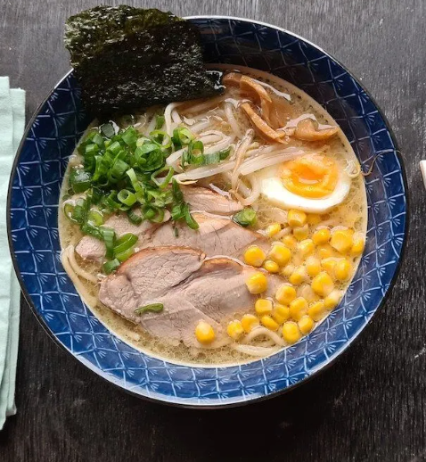

Sapporo Ramen Recipe for 4 servings:

Ingredients
-
For Broth:
- 8 cups chicken or vegetable broth
- 4 tablespoons miso paste
- 2 tablespoons soy sauce
- 2 tablespoons mirin (sweet rice wine)
-
For Ramen Assembly:
- 4 packs of ramen noodles (about 400g)
- 2 tablespoons vegetable oil
- 4 cloves of garlic, minced
- 1 tablespoon grated ginger
- 4 sheets of nori (seaweed), cut into small squares
- 4 green onions, sliced
- 4 soft-boiled eggs
-
Optional Toppings:
- Sweet corn kernels
- Butter
- Bean sprouts
- Ground pork
Instructions
-
Broth:
-
In a large pot, combine the chicken or vegetable broth, miso paste,
soy sauce, and mirin.
-
Bring the broth to a simmer over medium heat, stirring until the
miso paste is fully dissolved.
-
Let the broth simmer for about 15 minutes to allow the flavors to
meld together. Keep warm.
-
Ramen Assembly
-
Cook the ramen noodles according to the package instructions. Drain
and set aside.
-
In a large pot or skillet, heat the vegetable oil over medium heat.
Add the minced garlic and grated ginger, and sauté for about 1
minute until fragrant.
- Divide the cooked ramen noodles into four serving bowls.
-
Pour the hot broth over the noodles, making sure to distribute it
evenly.
- Top each bowl with sliced green onions and nori squares.
-
Optional: Add additional toppings such as sweet corn kernels, a
pat of butter, bean sprouts, or cooked ground pork.
Specificity
Sapporo Ramen, originating from Hokkaido, features a thick and flavorful
miso-based broth with medium-thick curly noodles, while Hakata Ramen, from
Fukuoka, has a rich and creamy pork bone broth with thin straight noodles.
The main difference lies in the broth base, flavor profile, and noodle
thickness, highlighting the regional variations in Japanese ramen styles.
back to home page